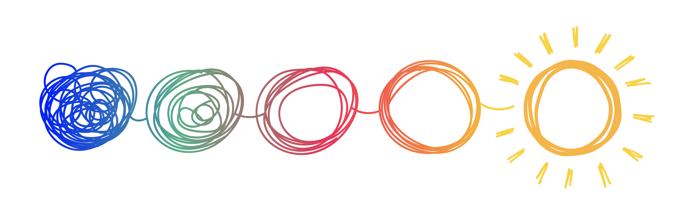

Para comunicarse, puede hacerlo a:
Soledad Ballesteros Teuber
+56 9 9595 1327 (whatsApp)
+56 9 4402 5680 (whatsApp)
o al teléfono fijo:
-ATENCIÓN PRESENCIAL : Prat 111 of 211 (esquina Chacabuco) Edificio Fundación, Curicó.
-ATENCIÓN ONLINE : ZOOM o videollamada de whatsApp
Curicó. ¿Cómo llegar?
